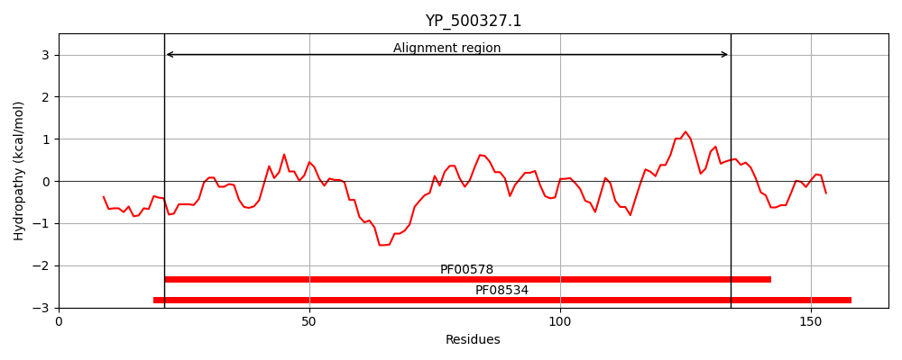
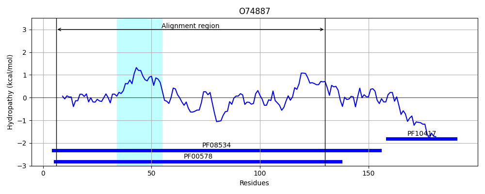
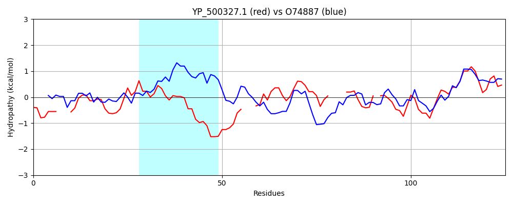

Hit Accession: O74887
Hit TCID: 8.A.147.1.1
Hit Description: gnl|BL_ORD_ID|7520 gnl|TC-DB|O74887|8.A.147.1.1 Peroxiredoxin tpx1 OS=Schizosaccharomyces pombe (strain 972 / ATCC 24843) OX=284812 GN=tpx1 PE=1 SV=1
Mach Len: 125
e:0.000353
Query TMS Count : 0
Hit TMS Count: 1
TMS-Overlap Score: 0.000000
Predicted Substrates:CHEBI:24493;hemin
BLAST Alignment:
| Protein Hydropathy Plots: | |
|---|---|
|  |  |
Pairwise Alignment-Hydropathy Plot: | |
|  | |